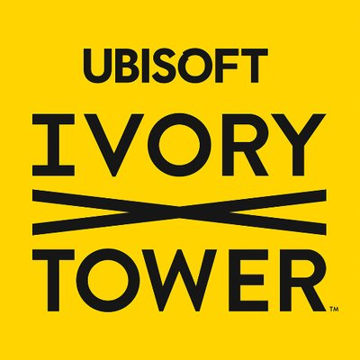
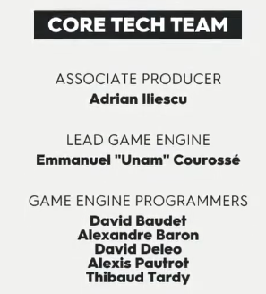
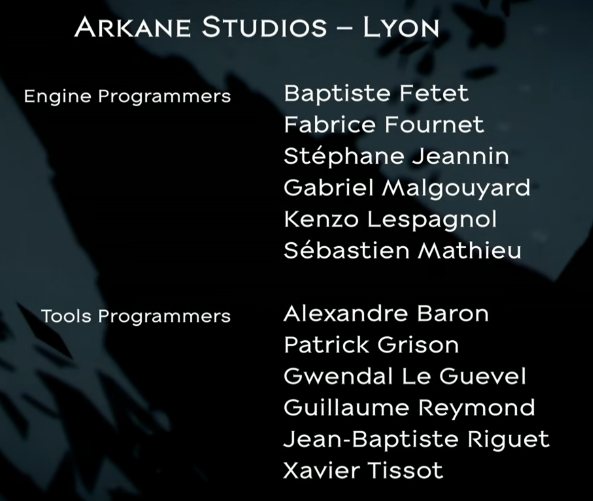
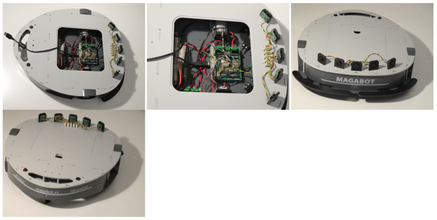
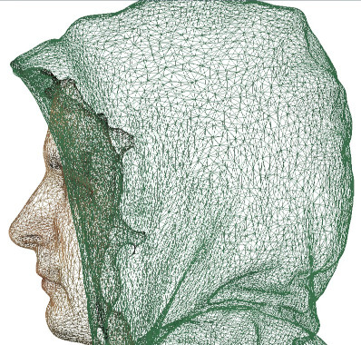

Overview
An overview of what I've been working on so far.
Of course these are not the only jobs I worked, but those I consider to be the most relevant to my current career path (or the list would go on and on !).
Game Engine Developer - Ubisoft, Montréal, Québec, Canada (September 2022 - now)

I am currently working on an unannounced project at Ubisoft Montréal using the proprietary Snowdrop game engine.
A lot of information is under NDA but my main missions include:
- Developing new features for the game editor and debugging existing issues
- Delivering a deterministic game experience across all target platforms (PC, Xbox Series X, Playstation 5) using a custom Clang pipeline
- Ensuring the codebase is properly tested using tools like the Catch2 unit test framework and SonarQube source code analyzer.
- Steering the game engine team's efforts in the right direction using project management tools like Jira, Confluence, Miro.
Head of Game Programming Teaching - ISART Digital, Montréal, Québec, Canada (2019 - 2022)
After five years working for AAA companies, I decided to work in a school to share my knowledge with students. That is why I decided to join ISART Montréal.
I first joined the school as a teacher for the video game programming first year class, then became head of the programming department of the Montréal school starting my second year there.
My responsibilities were varied and included on-site teaching, grading, promoting the school at industry events, act as liaison with students' families, creating plannings and interviewing potential teacher candidates.
I gave lectures about multiple technical subjects at ISART, but here were the main ones:
- Basics of C and object-oriented programming with C++
- Advanced C++ (Multithreading, atomics, network sockets)
- 3D rendering, computer graphics and linear algebra (Software Rasterizer, OpenGL, GLM, Vulkan, shaders)
- Video game project generation with Modern CMake
- Using version control softwares like Git and Perforce for video games
- Test-driven development using the Catch2 testing framework
- Automatic documentation generation using Doxygen
- Project-based discovery of Unity: Animation Timeline, prefabs, physics, URP, Cinemachine...
- Project-based discovery of Unreal Engine 4: Behavior Trees, Blueprints, UE4 C++, UMG, Onlinesubsystem, Sublevels, Spline-based movement and tools....
The final project for the first-year class was recreating a Minecraft-like first person game, using a custom voxel engine written from scratch using low-level libraries like OpenGL for rendering and GLFW for windowing.
The final project for the second-year class and the curriculum was to build a C++ 3D game engine from scratch, which I gave lectures for about the following topics:
- A Vulkan renderer using modern rendering algorithms like shadow mapping, IBL, and PBR.
- A complete rigid-body simulation using the NVidia PhysX engine
- An audio subsystem using FMOD
- A Skeletal Animation subsystem implementing hardware skinning using GLSL shaders
- Hierarchical scene description using a Scene Graph
- Multi-threaded resource manager to deal with asynchronous game asset loading and unloading
- Data-oriented game entities using the Entity-Component-System design pattern for optimized processing
- Fast-iterating gameplay components using LUA scripting
- ... and many more!
Video Game Engine Programmer - Ubisoft Ivory Tower, Lyon, France (2016 - 2019)

I spent three years at Ubisoft Ivory Tower working on the online open world racing game The Crew 2.
There, I worked on developing new features for the game engine, as well as optimizing existing ones on all target platforms for the game at that point in time (PC, Xbox One, Playstation 4).
My tasks also included collaboration with other programmers on the game editor to maintain and create new tools for artists and designers.
I also collaborated with the Rendering team on topics such as ocean water rendering and texture management.
My missions included, but were not limited to :
- Debugging the lock-free utilities of the asynchronous resource manager code
- Implementation of a Vehicle Locator editing system, allowing designers and artists to quickly place new assets on existing vehicles
- Various editor tools for artists and designers, curve editor and a 2D map editing tool
- Setting up an automated test bed for all available vehicles in the game, making sure they all load correctly without errors
- Implementing a time drift compensation algorithm, server and client-side
- Prototype of boids simulation for flying wildlife (birds)
- Refactoring of the whole distance-based entity spawning subsystem (mesh instancing optimization)

Video Game Tools Programmer - Arkane Studios, Lyon, France (2014 - 2016)
I worked for two years on the highly anticipated game Dishonored 2 as a Tools Programmer until the release of the game.
My main mission was to maintain the game editor application, written in C++, and answer to every need the Art team would have to make their work easier and faster.
During this time, I had the opportunity to work with animators, 3D artists, VFX artists, and more...
Among my main missions were :
- the creation of a texel density checking tool, allowing environment artists to check the resolution of textures imported in the game engine would fit their intended use (no 4K texture for the bottom of a flower pot...)
- maintaining the existing animation keyframing tool, helping the Animation team getting their work done faster. Among other tasks, I developed a pose extractor for characters, allowing animators to quickly preview, in editor mode, the poses a given character would make in game. I also helped the development of the procedural eye movement algorithms and tools.
- the creation of an economy tracker tool, so that economic designers could easily have an overview of the amount of game money they put in a level to help them balance the game.
- the maintenance and administration of the studio's automated game performance profiling tool, Sentinel.
- This bot roamed in the game levels autonomously, taking performance profiler snapshots at key waypoints in order to identify performance pain points and help the developers pinpoint where bottlenecks came from.
- I administrated the SQL Server database, rewrote most of the SQL code base for better performance, and revamped most of the Web view of the database using the AngularJS framework to allow lead developers to better visualize the statistics gathered by Sentinel.
- the creation of a mini-database tool written in Python and SQLite in order to assess the efficiency of the game assets' packing into retail-ready data chunks format.
- The goal of this tool was to quickly generate statistics about the memory consumption of each type of asset, how to optimize their layout on disk to benefit from most recently used files, detect duplicates, etc.

Python and Arduino Programmer - MetaLab Reticular Art Center, Lyon, France (2013)

Being a fan of stage theater, I consider myself lucky to have been able to work with MetaLab.
I helped Reticular build a project that would allow the director to remote control stage robots during a stage performance.
The end goal was to be able to program robots to carry decor elements, or to build entire choregraphies using a dedicated app on his iPad.
We started from scratch to implement this project, using a mix of Python and Arduino C++ to do it.
For the wireless network code, we used the Python Twisted event-driven framework, combined with Arduino chips plugged in to XBee shields for short-range wireless communication.
The Python application's job was to be the middleman between the iPad and the Arduino driving the wheels of the robot.
The robot model was a Magabot.
I started working on the implementation of the iPad application in Objective-C, but my contract with MetaLab ended before I could finish the project.

C++ 3D Programmer - Orten, Lyon, France (2013)

An internship at Orten was my first experience in the world of real-time 3D rendering.
Orten is part of Groupe Lecante, a company specialized in building leg prosthetics and orthopedics devices in general.
Orten is the software R&D division of Lecante, working on a number of in-house developed projects that the company then sells to medical centers or for their own usage.
I worked on the flagship product of the company, OrtenShape, a CAD software used to model and correct photogrammetric body scans later used for prosthetics molding.
This software is built using C++ as programming language and Qt as a windowing interface.
My first mission was to profile the code of the application and come up with solutions to increase the performance of the most critical code paths. It got me experiencing with modern C++ multithreading, and a bit of CUDA.
Then I had to investigate a bug in VTK, the 3D visualization toolkit used by the application, to fix 3D model texturing when multiple textures are used instead of a single one.
Since it was tricky to figure out, we decided to open source on Github the source code of our solution, the vtkTexturingHelper, for other researchers to profit from it in case someone faced the same issue as us.
I wrote on my personal blog an article about this research which, according to Analytics, turned out to be a surprise hit and one of the most visited pages of the blog ever since.
